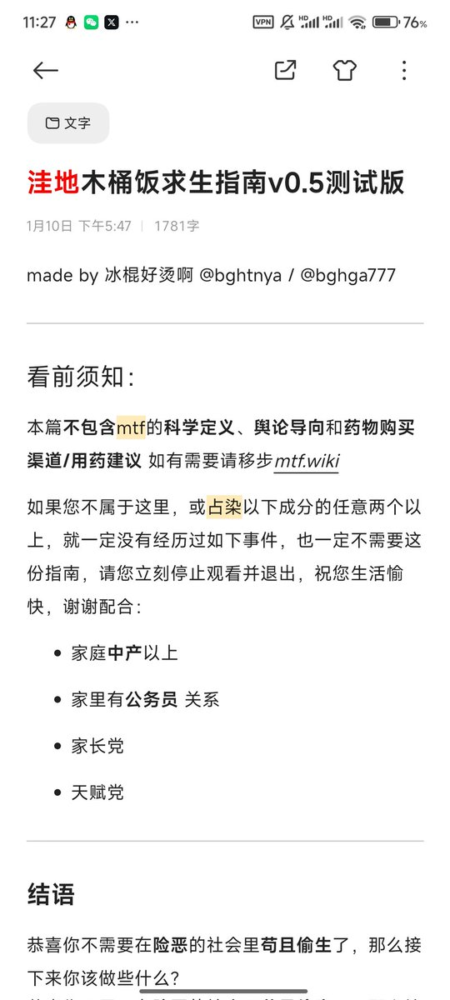
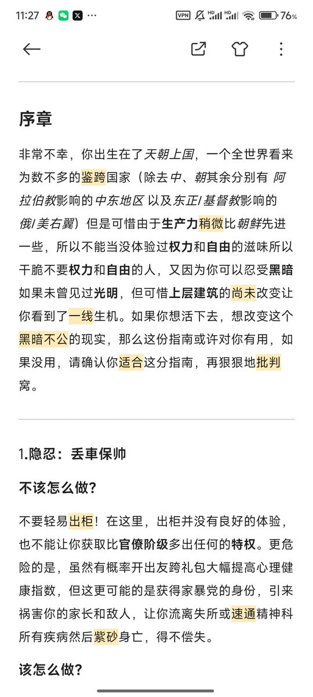
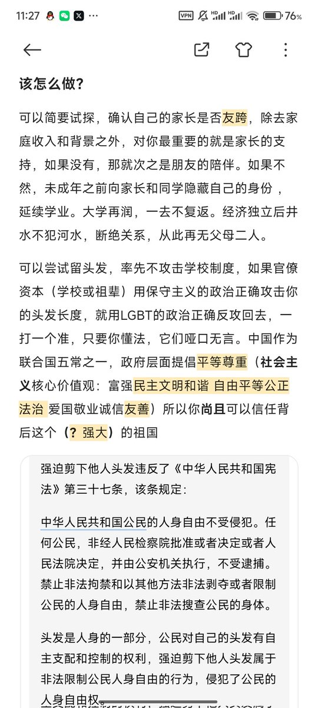
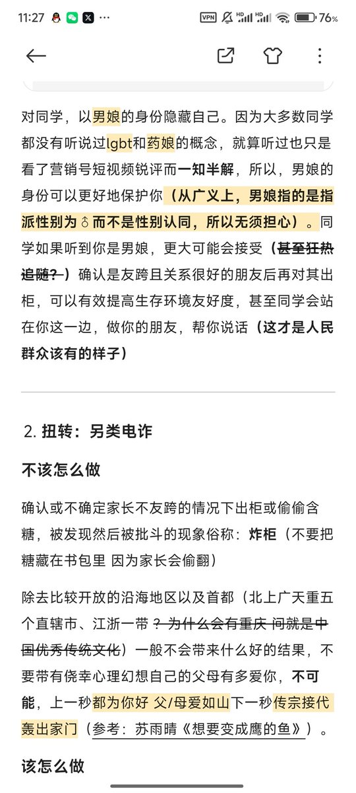

冰棍好烫喵 🍥🧊🍔🍟🍜🍣🍙🍧🍮🍩☕️💊🤤
@bghtnya
@gdioiui 看第三页




冰棍好烫喵 🍥🧊🍔🍟🍜🍣🍙🍧🍮🍩☕️💊🤤
@bghtnya
之前打算写洼地木桶饭求生指南还没写完
但是现在估计没什么时间写然后要开学了还有一堆作业要写QAQ反正暂时不打算写了
先发一个ver0.5测试版 或许可以帮到一部分需要的人
* 望转发扩散 https://t.co/LaZwOsTOCX
圣三一第一步枪 🍥 ❄️
@gdioiui
BYD学校非要我剪头发
而且威胁要给我处分
不剪头发影响谁了？ 行为规范是法律吗
以下是ds生成内容
结论先行：通常情况下，单纯因为头发过长就给予处分，很可能超出了学校合理管理的边界，其合法性值得质疑。
这个问题涉及学校管理权、学生个人权利和人格尊严之间的平衡，需要从几个层面来分析。